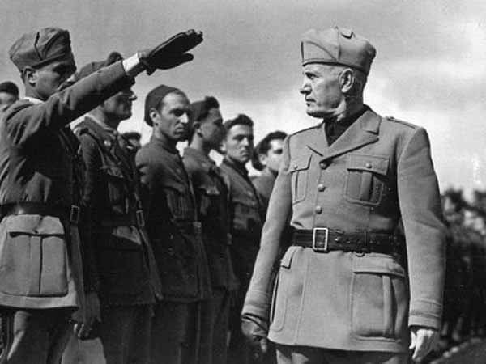
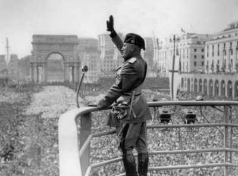

IB Docs (2) Team
IB Docs (2) Team

1.1 Expansión italiana (1933-1940)

Junto con el aumento de las tensiones en Asia, en los años 30 las acciones de Mussolini y Hitler también aumentaron las tensiones en Europa y pusieron a la seguridad colectiva gravemente a prueba. La principal respuesta internacional se convirtió en una de apaciguamiento. Sin embargo, esto no evitó el estallido de la guerra en 1939.
Esta página se centra en las acciones de Mussolini en estos años.
Más ENFOQUES DEL APRENDIZAJE sobre el ascenso al poder de Mussolini se puede encontrar aquí: 3. Italia 1918 - 1939
Preguntas orientadoras:
¿Qué factores influyeron en la política exterior de Mussolini?
¿Fueron las acciones de Mussolini en la escena internacional impulsadas por deseos de promover la cooperación o de fomentar la tensión?
¿Cuál fue el impacto de la política exterior de Mussolini en los años 30?
¿Qué tan adecuada fue la respuesta internacional a la política exterior de Mussolini?
¿Cuál fue el papel de Mussolini en los asuntos internacionales después de 1935?
1. ¿Qué factores influyeron en la política exterior de Mussolini?

Actividad inicial
De a dos, considere las siguientes características del fascismo. ¿Cuáles podrían ser las implicaciones de cada una de ellas en la forma en que se dirige un estado? ¿Qué clase de política exterior esperarían ver de un estado fundado en el fascismo?
Nacionalismo
Militarismo
Darwinismo social
La unidad social
Autoritarismo
La siguiente actividad se refiere a los factores de largo y corto plazo que contribuyeron al ascenso al poder de Mussolini y que también influyeron en el desarrollo de los objetivos su política exterior. Aunque este tema comienza en 1933, es necesario tener una comprensión de cómo la historia reciente de Italia influyó en la política interior y exterior de Mussolini.
Tarea Uno
Enfoques de aprendizaje: Habilidades de pensamiento
1. Investiga y toma notas sobre los siguientes factores que contribuyeron al ascenso al poder de Mussolini. El ENFOQUES DEL APRENDIZAJA 3. Italia (1918 - 1939) será de ayuda.
- Debilidades a largo plazo de la democracia liberal de Italia (considere la falta de identidad nacional, las divisiones entre la iglesia y el estado, las protestas de la clase obrera y la oposición nacionalista)
- El impacto sobre Italia de la Primera Guerra Mundial y el Tratado de Versalles
- La crisis del Fiume
- La atracción por la ideología fascista
- Los problemas económicos de la posguerra
- La revolución bolchevique de 1917
- La marcha sobre Roma
2. Crea una infografía (diagrama visual) para mostrar cómo los factores mencionados colaboraron para permitir a Mussolini tomar el poder en 1922
A diferencia de Hitler, Mussolini no tenía metas claras de política exterior antes de tomar el poder. Sin embargo, después de 1925, desarrolló un conjunto de objetivos que incluían:
- Incrementar el orgullo nacional
- Consolidar el apoyo interno al régimen
- Revisar los tratados de 1919 - 1920
- Dominar los Balcanes
- Dominar el Mediterráneo
- Construir un imperio, expandirse territorialmente en África
- Fomentar la difusión del fascismo en otros países
Tarea dos
Enfoques de aprendizaje: Habilidades de pensamiento
¿Cuáles de los factores sobre los que investigaste en la Tarea 1 habría tenido un impacto en los objetivos de la política exterior de Mussolini?
Tarea Tres
ENFOQUES DEL APRENDIZAJE: Habilidades de pensamiento
Mira los primeros 6 minutos de "El camino a la guerra: Italia" que se pueden encontrar aquí: 2. La expansión alemana e italiana: Videos y actividades y responda a las siguientes preguntas:
1. ¿Cuál, según su hijo, era el sueño de Mussolini para Italia?
2. ¿Cuál creían los nacionalistas que era el primer objetivo del gobierno?
3. ¿Cuál fue el impacto de la Primera Guerra Mundial en Italia?
4. ¿Qué les prometió Mussolini a los italianos que lograría?
2: ¿Las acciones de Mussolini en la escena internacional en los años 20 fueron impulsadas por el deseo de promover la cooperación o fomentar la tensión?
"El estilo de Mussolini en el extranjero, como en casa, era el del matón más que el del negociador... En política exterior le preocupaba menos reducir las animosidades internacionales que fomentarlas...” Denis Mack Smith, Mussolini, 1983
Actividad inicial
Mira la caricatura de David Low que se puede encontrar aqui.
¿Cuál es el mensaje de esta caricatura de David Low de 1923 sobre las intenciones de Mussolini en los años 20?
Haga clic en el ojo para ver las pistas.
Considere:
¿Como retrata el caricaturista a Mussolini? ¿Cuál es la importancia del hecho de que está haciendo sonar un tambor con la palabra “guerra” escrita sobre él?
¿Quiénes miran por encima del muro? ¿Cuál es su relevancia y por qué le piden a Mussolini que entre?
¿Por qué el cartel sobre la pared dice “Dottyville”?
Las actuaciones de Mussolini en la escena internacional durante la década del 20 no forman parte del programa de estudios y no aparecerán en la Prueba de fuentes (Prueba 1) de IB. Sin embargo, es importante entender las acciones de Mussolini en esos años para comprender la evolución de su política exterior.
Tarea Uno
ENFOQUES DEL APRENDIZAJE: Habilidades de investigación y autogestión
1. Complete la siguiente tabla para explicar la participación de Italia en cada evento de los años 20 y la medida en que Mussolini demostró cooperación o agresión.
2. ¿Cuáles son sus conclusiones generales sobre la política exterior de Mussolini en los años 20? ¿Hasta qué punto está de acuerdo con Mack Smith (véase la cita anterior)?
 Tabla ilustrativa de la política exterior de Mussolini en los años 20
Tabla ilustrativa de la política exterior de Mussolini en los años 20
Tarea Dos
ENFOQUES DEL APRENDIZAJE: Habilidades de pensamiento
Lea la fuente a continuación y luego responda a las preguntas
1. ¿Cuáles eran, según Antonio Cippio, los objetivos de la política exterior de Italia en los años 20?
2. Con referencia a su origen, propósito y contenido, juzgue el valor y las limitaciones de esta fuente para los historiadores que estudien la política exterior de Mussolini en los años 20.
Fuente: Antonio Cippio, político italiano y escritor en su serie de conferencias, "Italia: El problema central del Mediterráneo", que publicó en 1926.
“Con el episodio del bombardeo de Corfú, ella [Italia] dio al mundo la prueba, además de su voluntad de ser respetada en todas las partes del mundo, de su gran moderación. Durante los largos y tediosos tratados con Yugoslavia ha dado amplias pruebas de su buena voluntad. En sus relaciones con la Sociedad de las Naciones, el gobierno fascista quiso mostrar la alta consideración que le tiene, cuando hace menos de un año me dio la honrosa oportunidad de anunciar en la Asamblea General de la Sociedad en Ginebra el ofrecimiento de fundar un Instituto de unificación del derecho privado, que se establecería en Roma a expensas de Italia bajo los auspicios de la Sociedad".
3: ¿Cuál fue el impacto de la política exterior de Mussolini en los años 30?
“Barbarie” and “Civilización”
¿Cuál es el mensaje de esta caricatura con respecto a la invasión a Abisinia?
Haga clic en el ojo de abajo para ver las pistas
Esta caricatura expresa dos puntos con claridad
- La ironía acerca de lo que se entiende por “civilización”, representada por la moderna Italia, en contraposición con la “barbarie” representada por la poco sofisticada Abisinia.
- La representación visual de lo acontecido en Abisinia como resultado de la invasión
Mientras que en la década del 20 Mussolini alternaba entre la cooperación y la agresión, en la década del 30 se distanció de cualquier tentativa de diplomacia y cooperación. Sus acciones en los años 30 le muestran buscando la expansión imperial y avanzando hacia una alianza con Alemania.
Tarea Uno
ENFOQUES DEL APRENDIZAJE: Habilidades de pensamiento
Continúe viendo Road to War: Italy desde el minuto 17 al minuto 33 (esto se puede encontrar aquí: 2. La expansión alemana e italiana: Videos y actividades
Responde a estas preguntas:
1. ¿Cuál era la opinión de Mussolini sobre la guerra?
2. ¿Cómo preparó a los italianos para la guerra?
3. ¿Cuál era la importancia de Austria para Italia?
4. ¿Qué sucedió en 1934?
5. ¿Qué factores alentaron a Italia a expandirse hacia Etiopía?
6. ¿Qué factores permitieron a Italia ganar la guerra?
7. ¿Qué acciones fueron tomadas contra Italia por la Sociedad de las Naciones?
8. ¿Cuál fue el impacto de esto dentro de Italia?
9. ¿Cómo impactó la guerra de Abisinia en Italia en general?
Tarea Dos
ENFOQUES DEL APRENDIZAJE: Habilidades de pensamiento e investigación
Como muestra el vídeo, Mussolini frenó los planes de Hitler en Austria en 1934.
De a dos, discutan lo siguiente:
1. ¿Cómo veían las democracias occidentales el papel de Mussolini en los asuntos europeos?
2. ¿Cuáles fueron los términos del Frente de Stresa que se firmó entre Gran Bretaña, Francia e Italia en abril de 1935?
Tarea Tres
ENFOQUES DEL APRENDIZAJE: Habilidades de pensamiento
Según el siguiente extracto de un libro de texto moderno, ¿cuáles eran las debilidades del Frente de Stresa?
El "Frente de Stresa" trabajaba para prevenir cualquier cambio en Europa. Sin embargo, el acuerdo era vago y ni siquiera nombraba específicamente a Alemania. No se acordó ningún método para defender sus objetivos. Mientras que a Italia se le había pedido que adoptara una postura firme con respecto a Alemania, Gran Bretaña estaba dispuesta a no ofender a Hitler. Sin embargo, Italia obtuvo más protección contra el Anschluss a través de este acuerdo y, lo que es más importante, tuvo la impresión durante las conversaciones de Stresa de que Gran Bretaña y Francia habían dado su consentimiento para ampliar el control italiano en Abisinia.
El punto de inflexión clave en la política exterior de Mussolini fue la invasión a Abisinia. Esta acción fue condenada por la Sociedad de Naciones y tuvo un impacto negativo en las relaciones con las democracias occidentales. Sin embargo, dentro de Italia, la invasión fue vista como un evento positivo. De hecho, condujo a un aumento del sentimiento nacionalista que fomentó más actos de agresión por parte de Mussolini.
Tarea Cuatro
ENFOQUES DEL APRENDIZAJE: Habilidades de pensamiento
Lea las siguientes fuentes e identifique los motivos clave de la invasión de Mussolini a Abisinia.
Fuente A
Un discurso de Mussolini al pueblo italiano el día previo a la invasión de Abisinia, octubre de 1935.
“No es sólo nuestro ejército el que marcha hacia su objetivo, 44 millones de italianos marchan con ese ejército, todos unidos y en alerta. Otros intentaron cometer la más negra injusticia, quitándole a Italia su lugar en el sol. Cuando, en 1915, Italia unió su destino con los aliados, ¿cuántas promesas se hicieron? Para luchar por la victoria común, Italia aportó su suprema contribución de 670.000 muertos, 480.000 discapacitados y más de un millón de heridos. Cuando fuimos a la mesa de esa odiosa paz, sólo nos dieron las migajas del botín colonial".
Fuente B
Patricia Knight, Mussolini y el Fascismo, 2003
“La invasión de Abisinia se llevó a cabo principalmente para demostrar el estatus de gran potencia de Italia y, al hacerlo, vengar Adowa... Otros motivos fueron la perspectiva de ganancias económicas en forma de petróleo, carbón y oro y de reclutas africanos para el ejército italiano".
Fuente C
Extracto de un libro de texto moderno
“Los objetivos de la política exterior de Mussolini al invadir Abisinia se originaron en las ambiciones nacionalistas italianas a largo plazo de construir un Imperio y convertirse en una gran potencia imperial como Gran Bretaña y Francia o incluso como el clásico Imperio Romano de la antigüedad... La invasión de Abisinia le permitiría también perseverar en el ideal fascista clave de la guerra y obtener una victoria fácil dado que el ejército de este país no estaba modernizado. En términos más inmediatos, Mussolini pretendía que la invasión consolidara su culto a la personalidad y consiguiera apoyo al régimen. Desviaría aún más la atención de los fracasos del estado corporativo y el impacto de la Gran Depresión”.
Tarea Cinco
ENFOQUES DEL APRENDIZAJE: Habilidades de comunicación
Usando la información de las fuentes anteriores, así como el vídeo, crea un mapa mental para mostrar las razones de la invasión de Mussolini a Abisinia.
Utiliza los siguientes encabezados:
- Motivos económicos
- Motivos políticos
- Motivos ideológicos
- Cambios en el alineamiento europeo
Tarea Seis
ENFOQUES DEL APRENDIZAJE: Habilidades de investigación
Profundiza la investigación sobre las acciones del ejército de Mussolini en Abisinia y la naturaleza del conflicto.
Este artículo le ayudara. (Ver archivo adjunto para traducción al español)
 Abisinia: la trauccion al espanol
Abisinia: la trauccion al espanol
¿Qué factores permitieron a los italianos ganar esta guerra?
Tarea Siete
ENFOQUES DEL APRENDIZAJE: Habilidades de pensamiento y autogestión
Completa la tabla adjunta para resumir la política exterior de Mussolini en los años 30 y la reacción internacional a la misma.
 Politica exterior de Mussolini 1936 - 1939
Politica exterior de Mussolini 1936 - 1939
Tarea Ocho
ENFOQUES DEL APRENDIZAJE: Habilidades de pensamiento
De a dos, consideren lo siguiente:
1. ¿Hasta qué punto Mussolini a) había fortalecido y b) debilitado la posición internacional de Italia para 1939?
2. ¿En qué medida Mussolini había cumplido sus objetivos de política exterior?
4. ¿Cuán adecuada fue la respuesta internacional a la política exterior de Mussolini?
Actividad de inicio
Observa esta caricautre de la revista británica Punch.
¿Cuál es el mensaje de esta caricatura?
Encuentra otra caricatura contemporánea sobre la respuesta internacional a la crisis de Abisinia. Imprímela y haz anotaciones que expliquen de qué manera los detalles de la caricatura se vinculan al mensaje general.
Tras el incidente de Wal Wal, el emperador abisinio Haile Selassie apeló a la Sociedad de Naciones para que arbitre. Sin embargo, la Sociedad no encontró responsable a ninguna de las partes. Selassie apeló nuevamente a la Sociedad el 17 de marzo de 1935 tras una gran concentración de fuerzas italianas en África Oriental. Apeló una vez más el 11 de mayo. El 20 de mayo, la Sociedad celebró una sesión especial para discutir la crisis y el 19 de junio, Selassie pidió que se enviaran observadores de la Sociedad de Naciones a la región.
Tras la invasión de Abisinia el 3 de octubre, la Liga encontró debidamente a Italia como agresor e inició el proceso de imposición de sanciones. Sin embargo, este proceso fue lento y las sanciones fueron limitadas.
Tarea Uno
ENFOQUES DEL APRENDIZAJE: Habilidades de pensamiento
Lea el discurso de Haile Selassie a la Liga de las Naciones que puede encontrar aqui
1. ¿Qué sugiere este discurso sobre la naturaleza de la guerra en Abisinia?
2. ¿Qué argumentos da Selassie para demostrar que Italia es responsable de este conflicto?
3. ¿De qué manera argumenta que Italia ha desafiado a Sociedad de las Naciones?
4. ¿Qué argumentos ofrece para persuadir a la Sociedad de las Naciones de que actúe?
5. ¿Qué tan efectivo es este discurso? (Observa el tono y el lenguaje del discurso)
6. Con referencia a su origen, propósito y contenido, ¿qué valor tiene este discurso para los historiadores que estudian la crisis de Abisinia?
Los británicos y los franceses idearon un plan para poner fin al conflicto. Esperaban que el plan apaciguara a Italia y mantuviera vigente al Frente de Stresa. En diciembre de 1935, el Ministro de Relaciones Exteriores de Francia, Pierre Laval, y su homólogo británico, Samuel Hoare, redactaron el Pacto Hoare-Laval. Esto implicaba ceder a Mussolini la mayor parte de Abisinia mientras que Selassie mantendría el acceso al mar. Sin embargo, el plan se filtró a la prensa francesa, lo que provocó una furiosa reacción pública a la aparente duplicidad de estos dos países. Los británicos y los franceses se vieron obligados a denunciar el pacto.
La crisis de Abisinia tuvo varias consecuencias para las relaciones internacionales:
- Dañó severamente las relaciones de Italia con Francia y Gran Bretaña.
- Aunque Gran Bretaña había socavado el acuerdo del Frente de Stresa al firmar el acuerdo naval anglo-alemán en junio de 1935, la respuesta a la invasión italiana terminó con el acuerdo.
- Italia se retiró de la Sociedad de Naciones, dando el final al mecanismo de seguridad colectiva.
- Mussolini y Hitler se acercaron más y firmaron el Pacto Anti-Comintern en noviembre de 1936.
- La resistencia italiana a Anschluss, que había impedido que Hitler lograra la anexión de Austria en 1934, ahora se redujo.
Tarea Dos
ENFOQUES DEL APRENDIZAJE: Habilidades de pensamiento y comunicación
Dividan la clase en tres grupos.
Grupo Uno
Escribirá un informe de un periódico británico sobre los acontecimientos de Abisinia con fecha del 18 de noviembre de 1935.
Tendrá que discutir lo siguiente en su informe:
- Los eventos que llevaron a la invasión
- Las reacciones del gobierno en Gran Bretaña; las acciones que ha tomado al respecto
- ¿Cuál es la opinión pública sobre este asunto (¿Han hecho suficiente la Sociedad de Naciones y Gran Bretaña?)
- La opinión del periódico sobre lo que debería suceder a continuación
Grupo Dos
Escribirá un informe para un periódico italiano sobre los acontecimientos de Abisinia con fecha 18 de noviembre.
Tendrá que considerar lo siguiente:
- Las acciones de Italia en Abisinia
- Cómo se relacionan con las ambiciones italianas
- las opiniones del periódico sobre la reacción internacional a las acciones de Italia
NB Todos los periódicos en Italia estaban a favor del gobierno, así que considere cómo su contenido, tono y lenguaje reflejarán esto
Grupo Tres
Escribirá un informe británico sobre los acontecimientos de Abisinia, de diciembre de 1935.
Tendrá que considerar lo siguiente:
- El Pacto de Hoare Laval ha salido a la luz, por lo que deberá ser discutidos
- ¿Cuál es la reacción del periódico a este pacto? ¿Cuál es la reacción del público?
- ¿Qué debería pasar ahora?
5. ¿Cuál fue el papel de Mussolini en los asuntos internacionales después de 1935?
Entusiasmado por su "éxito" en Abisinia, Mussolini aprovechó la oportunidad de la Guerra Civil Española para asumir otro papel en la escena mundial. No sólo la guerra civil proporcionó la oportunidad de promover los ideales fascistas en cuanto a la importancia de la guerra, sino que Mussolini también esperaba obtener del General Franco bases navales en las Islas Baleares a cambio de la ayuda italiana. De hecho, tanto Italia como Alemania se involucraron en la Guerra Civil Española como se puede ver en el siguiente video.
Tarea Uno
ENFOQUES DEL APRENDIZAJE: Habilidades de pensamiento
Vea los primeros cinco minutos de este video (La Segunda Guerra Mundial en color: La Guerra Civil Española)
Tome notas sobre la contribución dada por Hitler y Mussolini al bando nacionalista en la Guerra Civil Española.
Mussolini envió más ayuda a España que cualquier otro país, incluyendo 70.000 soldados. Sin embargo, no tenía un plan claro cuando envió sus fuerzas a España y la guerra no era muy popular entre la población italiana. El costo de la guerra llevó a una devaluación de la lira y consumió un tercio de las reservas de guerra de Italia. También puso de manifiesto las debilidades militares de Italia cuando, por ejemplo, las fuerzas italianas fueron derrotadas por las Brigadas Internacionales, que luchaban por la República, en la batalla de Guadalajara en marzo de 1937.
También tuvo un impacto significativo en las relaciones diplomáticas de Mussolini. Los ataques de los submarinos italianos provocaron un aumento de la tensión con Francia y Gran Bretaña y, al mismo tiempo, acercaron a Italia a Alemania. Esto dio lugar a una alianza formal, la Alianza del Eje Roma-Berlín, el 25 de octubre de 1936. Italia también se unió al Pacto Anti-Komintern en noviembre de 1937, con Alemania y Japón, y abandonó la Sociedad de Naciones ese mismo año.
Como resultado de esta nueva relación con Hitler, Mussolini le indicó al gobierno austriaco que tratara directamente con Alemania, implicando así que Italia ya no la protegería. Así, en 1938, los nazis invadieron Austria.
Durante la crisis de Munich de 1938, Mussolini jugó el papel de "intermediario de la paz". Sin embargo, cuando Hitler invadió los Sudetes en marzo de 1939, ni siquiera consultó o informó a Mussolini.
Tarea Dos
ENFOQUES DEL APRENDIZAJE: Habilidades de pensamiento
De a dos, discutan las razones del cambio de posición de Mussolini hacia Austria en 1938.
¿Hasta qué punto su alianza con Hitler era una "alianza de iguales"?
En un intento por recuperar la iniciativa en la escena internacional, Mussolini invadió Albania
Tarea Tres
ENFOQUES DEL APRENDIZAJE: Habilidades de pensamiento
Lea este artículo sobre el interés de Italia por la invasión de Albania en abril de 1939 y responda a estas preguntas.
- ¿Por qué Albania era de interés para Italia?
- ¿Qué participación había tenido ya Italia en Albania?
- ¿Cómo había tratado Albania de resistir la influencia italiana?
- ¿Cuál fue el detonante para que Mussolini invadiera Albania?
- ¿Qué factores contribuyeron a la derrota de Albania?
- ¿Cuál fue el resultado de esta derrota para Albania?
Ahora que Mussolini había restaurado su prestigio en Albania, se acercó a Alemania con la oferta de una alianza que iba a llamar "Pacto de Sangre". Los líderes alemanes se sorprendieron un poco por esto, pero la promesa de Mussolini de asistencia militar completa en caso de una guerra que involucrara a Alemania significaba que podría funcionar a su favor para minimizar la amenaza desde Occidente sobre Polonia. A través del Pacto, ambas potencias acordaron acudir en ayuda de la otra si ésta se viera envuelta en hostilidades "contrarias a sus deseos y anhelos".
Tarea Cuatro
ENFOQUES DEL APRENDIZAJE: Habilidades de pensamiento
Puede leer el acuerdo del Pacto de Acero aquí.
Según la segunda mitad de este documento, ¿qué factores comunes unían ahora a Italia y Alemania?
A pesar del Pacto de Acero, Mussolini era reacio a involucrarse en un conflicto a gran escala y le dijo en privado a Hitler que Italia aún no estaba lista para la guerra. Por lo tanto, cuando Hitler invadió Polonia y entró en guerra con Gran Bretaña y Francia, Mussolini declaró a Italia no beligerante.
Tarea Cinco
ENFOQUES DEL APRENDIZAJE: Habilidades de pensamiento
Como repaso de esta última sección, vea la parte final del video "Camino a la guerra: Italia" desde 33.30 y responda a las siguientes preguntas:
- ¿Qué factores animaron a Mussolini a hacer una alianza con Alemania?
- ¿Cuál fue el resultado del Eje Roma-Berlín de 1936 para Italia y los italianos?
- ¿Cómo se exhibió Mussolini como un estadista europeo en 1938?
- ¿Por qué Italia no estaba complacida con la invasión alemana de Polonia en 1939?
- ¿Por qué Mussolini finalmente entró en la guerra del lado de Hitler?
6. ¿Cuáles son las interpretaciones de los historiadores de las políticas de Mussolini?
Tarea Uno
ENFOQUES DEL APRENDIZAJE: Habilidades de pensamiento
Este es un excelente resumen de la política exterior de Mussolini en los años 20 y 30 por el profesor Gooch. Está en el estilo de una conferencia universitaria.
¡Escucha el video y toma notas! La primera parte de este video reseña bien las interpretaciones de la política exterior de Mussolini hechas por historiadores.
Tengan en cuenta que ésta es sólo la primera parte de la conferencia; las partes 2 a 4 pueden ser encontradas en YouTube.
 Twitter
Twitter
 Facebook
Facebook
 LinkedIn
LinkedIn
{kind=link}